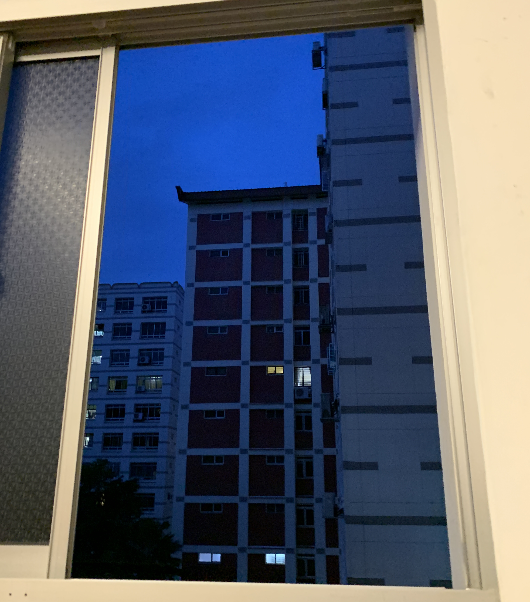

There's always a very small time window of about 10-15 minutes where the sky turns this shade of dark blue, not yet pitch black
How can I prolong this fleeting shade of blue?
If I travel by car across land?
I probably need the amount of time it takes for this deep blue to occur, to when it becomes pitch black. And the direction in which the sun is setting, I need to head the opposite of it, at the right speed.
Like so? ↘︎ path of setting sun ← direction of motion
⚛︎ return to notes ⁖ return to main